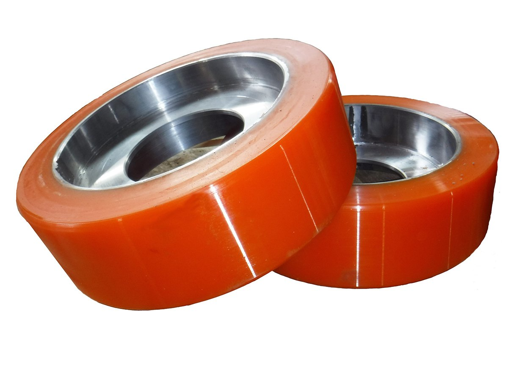
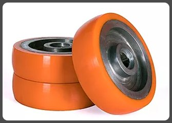
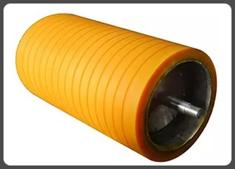
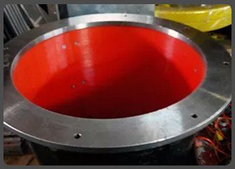
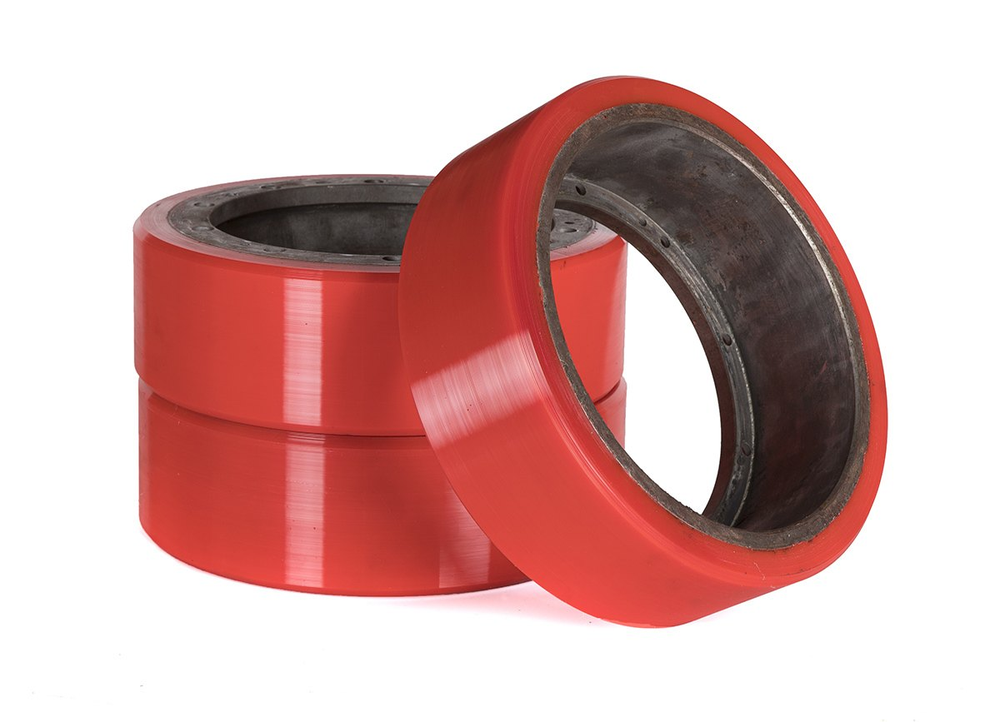
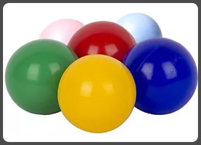
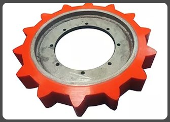
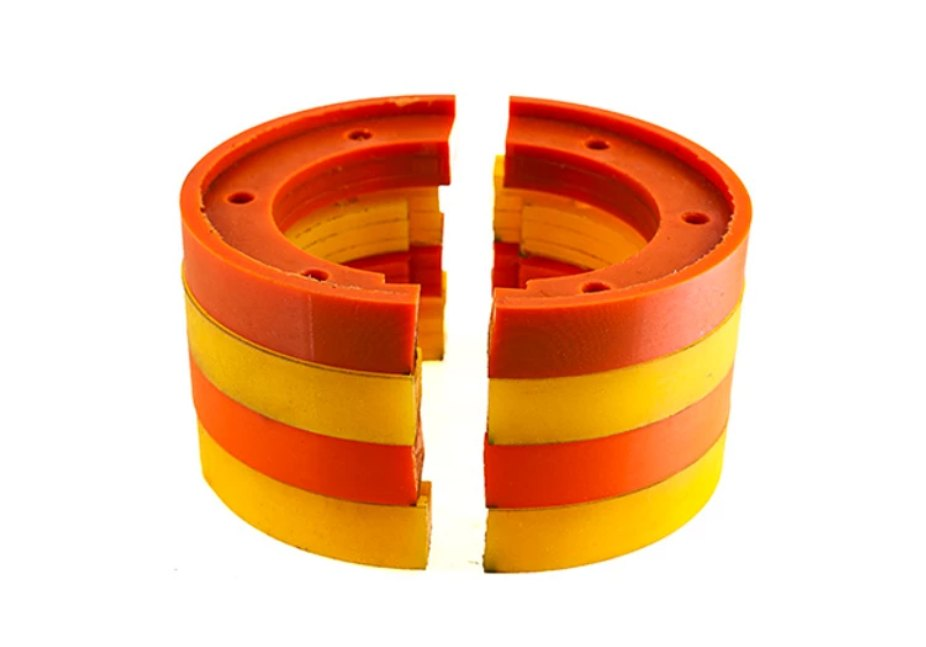

Одиннадцать направлений: колёса и ролики, восстановление, валы, скребки, футеровка, кольца, шары, автодетали, катки для гусеничной техники, ролики для гофрокартона. Всё изготавливается по чертежу, образцу или заданию заказчика

Детали по чертежу, образцу или техзаданию. Литьё, механическая обработка, контроль размеров, партии от одной штуки
01 · 5 фото
Колёса и ролики для рохлей, штабелёров, погрузчиков и производственного оборудования. Диаметр до 1200 мм, нагрузка до 10 тонн
02 · 8 фото
Новый полиуретановый слой вместо покупки колеса: рохли, штабелёры, погрузчики, внутрицеховые тележки
03 · 5 фото
Гуммирование валов и роликов, восстановление изношенного слоя и шеек. Валы и краш-ролики для бумаги и гофрокартона
04 · 5 фото
Скребки для конвейеров, ножи снегоочистителей, техпластины для отвалов. Стойкость к абразиву выше, чем у резины
05 · 5 фото
Полиуретановые накладки и покрытия для бункеров, течек, зернохранилищ, кузовов самосвалов и лотков
06 · 4 фото
Демпферные, рилевочные, проставочные и уплотнительные кольца. Диаметр до 1200 мм, твёрдость до 95 ед. Шор А.
07 · 5 фото
Шары для вибросит, галтовки и оборудования. Упругие, стойкие к истиранию, не травмируют сетку
08 · 1 фото
Сайлентблоки подвески, втулки реактивной тяги, буфера, проставки в пружины, муфты кондиционера
09 · 5 фото
Катки, натяжители и звёзды для вездеходов и гусеничной техники. Восстановление экономит до 70 % стоимости нового изделия
10 · 5 фото
Ролики, валы и краш-ролики для линий гофрокартона и бумаги. Полиуретан вместо резины: жёстче, точнее по размеру, дольше служит
11 · 3 фотоОсновная работа - как раз нестандартные изделия. Пришлите чертёж или образец